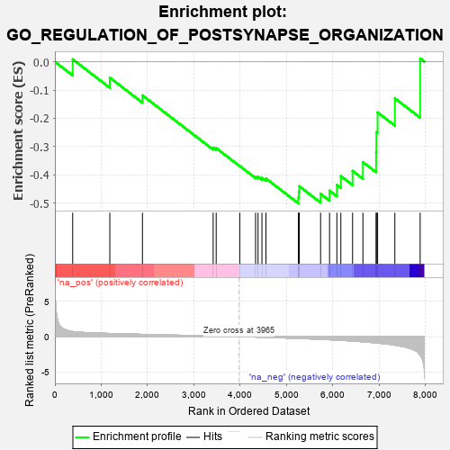

| | | Dataset | 7d |
| Phenotype | NoPhenotypeAvailable |
| Upregulated in class | na_neg |
| GeneSet | GO_REGULATION_OF_POSTSYNAPSE_ORGANIZATION |
| Enrichment Score (ES) | -0.5009093 |
| Normalized Enrichment Score (NES) | -1.2982068 |
| Nominal p-value | 0.15159574 |
| FDR q-value | 0.47145176 |
| FWER p-Value | 1.0 |
Table: GSEA Results Summary

Fig 1: Enrichment plot: GO_REGULATION_OF_POSTSYNAPSE_ORGANIZATION
Profile of the Running ES Score & Positions of GeneSet Members on the Rank Ordered List
| PROBE | GENE SYMBOL | GENE_TITLE | RANK IN GENE LIST | RANK METRIC SCORE | RUNNING ES | CORE ENRICHMENT | | 1 | MESD | | | 384 | 0.713 | 0.0086 | No |
| 2 | CRIPT | | | 1185 | 0.449 | -0.0562 | No |
| 3 | PAK3 | | | 1889 | 0.322 | -0.1190 | No |
| 4 | KIF1A | | | 3415 | 0.088 | -0.3039 | No |
| 5 | CDK5 | | | 3480 | 0.080 | -0.3055 | No |
| 6 | VPS35 | | | 3989 | -0.006 | -0.3689 | No |
| 7 | OPA1 | | | 4330 | -0.065 | -0.4065 | No |
| 8 | ARF4 | | | 4383 | -0.073 | -0.4072 | No |
| 9 | LRRK2 | | | 4467 | -0.087 | -0.4106 | No |
| 10 | ABI2 | | | 4554 | -0.106 | -0.4130 | No |
| 11 | SSH1 | | | 5254 | -0.258 | -0.4803 | Yes |
| 12 | PTEN | | | 5262 | -0.261 | -0.4604 | Yes |
| 13 | EPHA4 | | | 5273 | -0.265 | -0.4405 | Yes |
| 14 | LRFN4 | | | 5733 | -0.387 | -0.4673 | Yes |
| 15 | LRFN1 | | | 5926 | -0.443 | -0.4561 | Yes |
| 16 | DBNL | | | 6084 | -0.501 | -0.4359 | Yes |
| 17 | GRID2 | | | 6170 | -0.528 | -0.4045 | Yes |
| 18 | PTPRD | | | 6423 | -0.629 | -0.3859 | Yes |
| 19 | PTPRS | | | 6646 | -0.738 | -0.3549 | Yes |
| 20 | LRP8 | | | 6931 | -0.889 | -0.3197 | Yes |
| 21 | GHSR | | | 6937 | -0.894 | -0.2490 | Yes |
| 22 | DNM1L | | | 6963 | -0.913 | -0.1792 | Yes |
| 23 | NGEF | | | 7335 | -1.209 | -0.1294 | Yes |
| 24 | FYN | | | 7881 | -2.622 | 0.0113 | Yes |
Table: GSEA details [plain text format]
 Fig 2: GO_REGULATION_OF_POSTSYNAPSE_ORGANIZATION: Random ES distribution
Fig 2: GO_REGULATION_OF_POSTSYNAPSE_ORGANIZATION: Random ES distribution
Gene set null distribution of ES for GO_REGULATION_OF_POSTSYNAPSE_ORGANIZATION